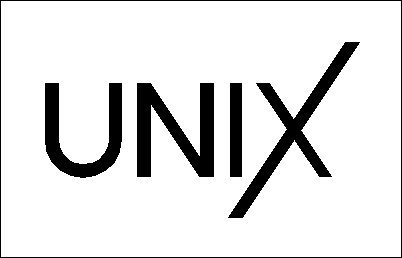
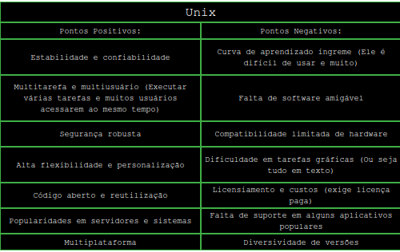
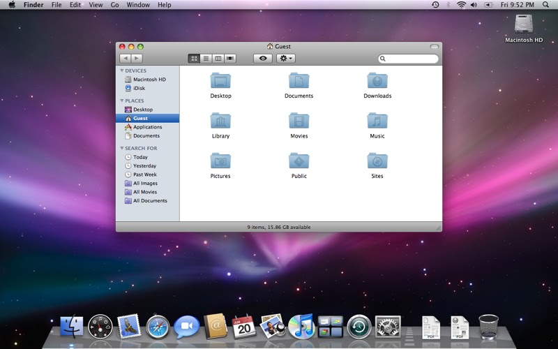

Unix:

O Unix é sem dúvidas um dos sistemas operacionais mais antigos, sendo o pai da maioria dos sistemas operacionais, acredite se quiser
mas ele foi base do Linux, do FreeBSD, MacOS e até o android, ele foi o começo dos sistemas operacionais, desenvolvido e criado nos anos 70
por Ken Thompson e Dennis Ritchie nos Bell Labs.
História do Unix:
A história do Unix se passa em 1960 na Bell Labs, por Ken Thompson e Dennis Ritchie, após um projeto Multics, Eles criaram um sistema
simples, reescrito em linguagem C (Que é uma linguagem de programação) para a portabilidade, tornando-o popular na universidade e
estabelecendo conceitos como filosofia modular e arquivos para tudo e foi assim que surgiu o Unix, que veio de um projeto.
Agora que sabemos da história, vamos ver os pontos positivos e negativos de usar Unix:

Perdoem-me pela má qualidade, houve técnicos, logo logo irá melhorar com o tempo, garanto.
Curiosidades sobre o Unix:
1) Nasceu de um projeto (Como perceberam na história)
2) Quase tudo é arquivo
3) Criado com linguagem C (Como dito na história)
4) O Unix é considerado o "Pai dos sistemas modernos"
5) O Unix tem a filosofia de "Faça uma coisa e faça bem"
Imagem da área de trabalho do Unix para alguns que nunca viram na vida:
Área de trabalho do Unix atual:

Área de trabalho do Unix antigamente:

Site oficial do bell labs: Bem atualmente eles pertencem a Nokia agora com o sendo assim: https://www.nokia.com